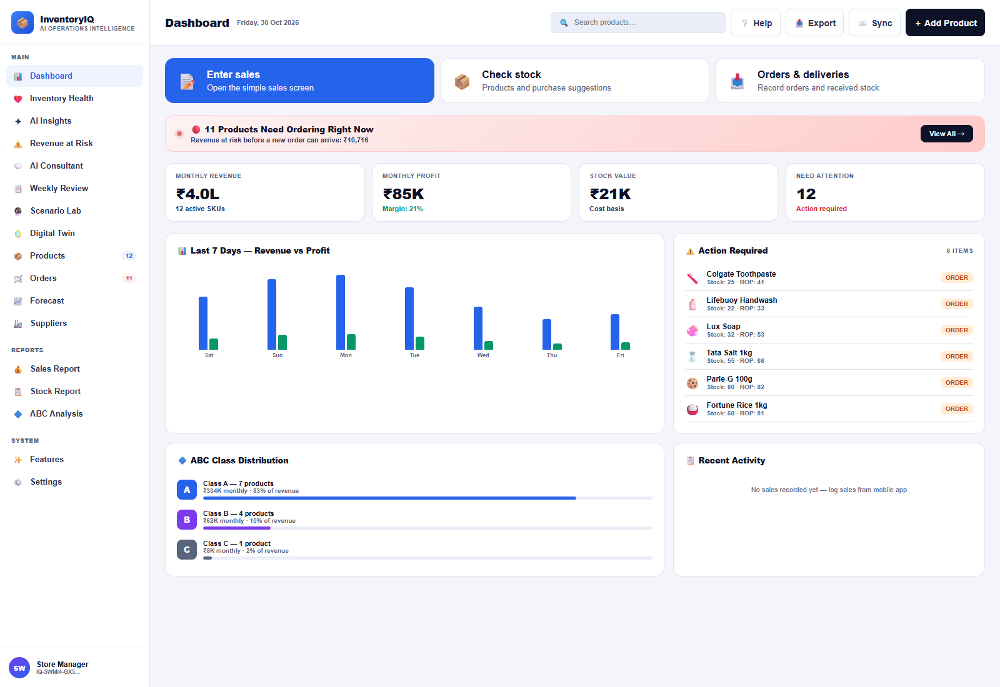

InventoryIQ
From a shelf running low to a clear next action.
An inventory decision assistant for small retailers: know what to buy, record what is on order, receive deliveries and explore how demand changes affect working capital.

A stock figure is only the beginning.
A retailer needs to balance availability with cash tied up on shelves. A useful tool must connect demand, supplier lead time and stock already on order to a purchase decision the merchant can act on.
Keep the next action visible.
InventoryIQ combines familiar inventory methods with a practical order-and-receive workflow. The phone view prioritises daily tasks; the manager dashboard adds ABC analysis, forecasting and scenario comparisons. My focus is the operations concept, framework integration and user experience; implementation is AI-assisted.
- 01
Observe
Maintain products, stock, prices and lead times; record daily sales.
- 02
Prioritise
Use demand, safety stock and ABC class to calculate reorder points and purchase quantities.
- 03
Record
Confirm a purchase already placed with a supplier. Incoming stock reduces repeat prompts.
- 04
Receive & review
Move the delivery into stock, then review forecasts and what-if scenarios.
One shared web calculation engine.
- Decision logic · JavaScript
- The web views share iq-core.js. EOQ balances ordering and holding costs. Reorder points account for lead time plus a one-day review period and class-based safety stock. ABC ranks cumulative annual revenue.
- Demand & scenarios
- Recent logged sales inform planning demand. Forecasts blend a linear trend with a seven-day moving average. Scenario controls vary demand, lead time and price to explore modeled inventory exposure.
- Web experience & storage
- A mobile web interface and desktop dashboard use browser localStorage. A manifest and service worker provide a PWA shell. This capture verified browser persistence; offline installation was not tested.
- Optional services & native source
- The repository includes a Cloudflare Worker/D1 sync backend, an AI proxy and React Native/Expo source. Cloud operation, LLM answers and the Android build were not exercised during this capture.
Open the current manager dashboard ↗ · Earlier embedded demo →
See the working experience.
Start with the decisions that matter
The manager dashboard brings stock value, ABC distribution and purchasing priorities together. The revenue and profit figures shown are estimates from the built-in demo products; the empty activity log confirms that this capture does not contain recorded shop sales.
Close the ordering loop
Suggested quantities sit beside stock, reorder points and supplier details. “I placed this order” records incoming stock after the merchant orders externally. Receiving the delivery moves those units into stock. The app does not send a purchase order to a supplier.
Read demand before placing an order
The forecast view combines a trend line with a seven-day moving average and shows a typical error band. These are estimates from sample product histories, not evidence of forecast accuracy at a real retailer.
Explore a demand shock before it happens
This run uses demand +20%, with lead time and price unchanged. The app recalculates stockout exposure, capital requirements and SKU-level reorder points. Its “AI Recommendation” here is a locally generated explanation of the scenario, not an LLM response.
Make it usable on the shop floor
The phone interface puts three everyday actions first: enter sales, check stock and receive a delivery. Product cards translate inventory calculations into a suggested purchase quantity. Captured at a 430-pixel phone viewport using the same sample basket.
A complete sample order cycle.
In an isolated demo store, Colgate Toothpaste started with 25 units. Recording the suggested order added 140 incoming units and cleared its reorder action. Receiving the delivery produced 165 units on hand and zero incoming. The 165-unit balance persisted after a reload. These are sample workflow checks, not measured business results.
Scope & limitations
- All five screenshots come from the supplied application running locally with its built-in 12-product demo. Dashboard revenue, profit, risk and scenario figures are modeled estimates.
- The shared-core and sync test suites passed locally. Cloud tests use simulated dependencies; no live store sync or AI service was called.
- Service-level and capital figures in the scenario planner are model outputs, not achieved service performance or validated savings.
- The app explicitly lists differential sync, vector-clock conflict resolution, EnergyGuard, FieldLock and SHA-256 integrity as planned features.
- The earlier embedded demo and teaching calculator below are retained separately. Their calculations and interface differ from the current application shown here.
Operations thinking, made tangible.
This project connects my MBA focus in operations and business analytics with product design: translating inventory theory into everyday decisions, exposing assumptions and closing the loop between a recommendation and a received delivery.
View my recruiter profile ↗Explore the original teaching calculator
This earlier 12-SKU exercise is a separate, simplified model. It uses annual demand, a fixed variability assumption and rank-based ABC groups. It does not reproduce the current app’s sales-based engine. Values reset when the page reloads.
| SKU | Demand/yr (D) | Order cost ₹ (S) | Hold cost ₹/yr (H) | Unit price ₹ | Lead time (days) | EOQ Q* | ROP (LTD + SS) | Safety Stock | ABC |
|---|